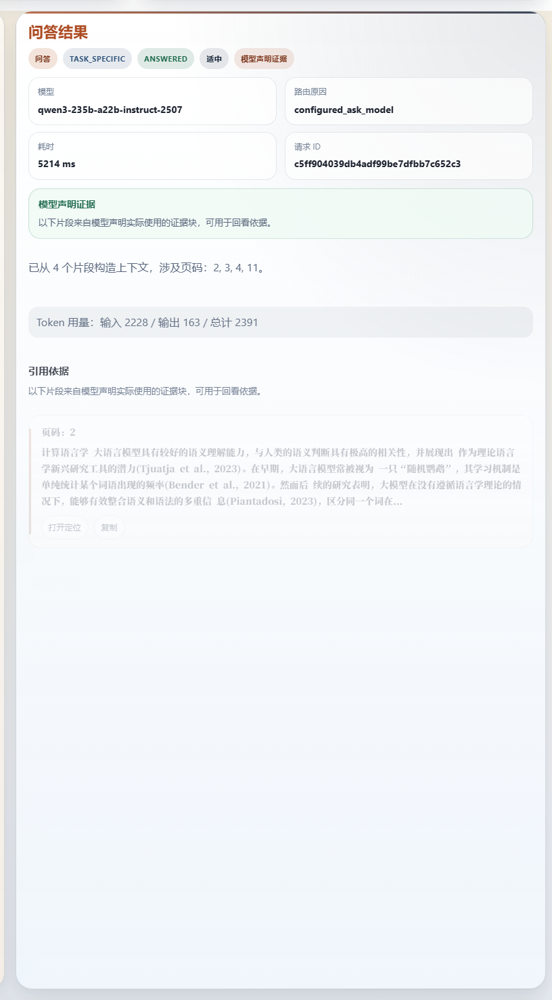
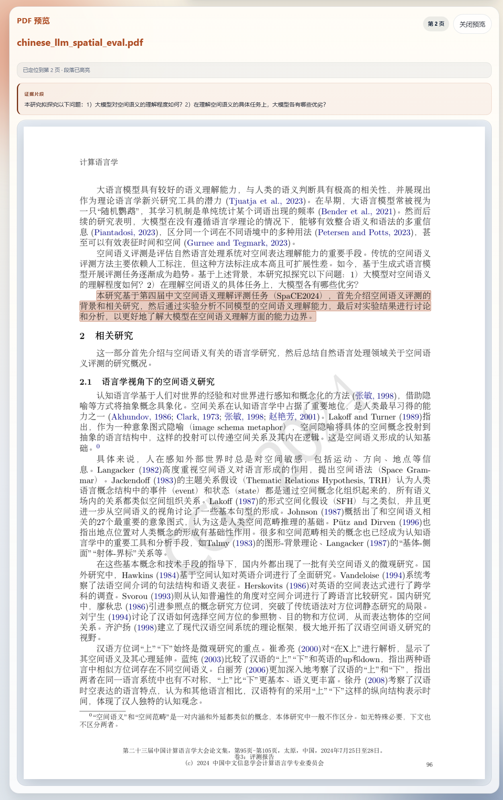
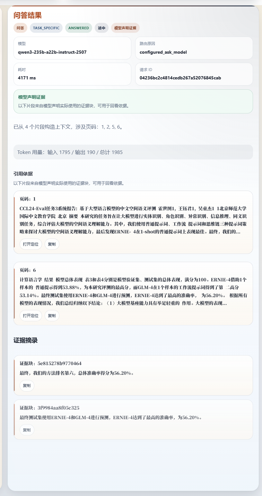
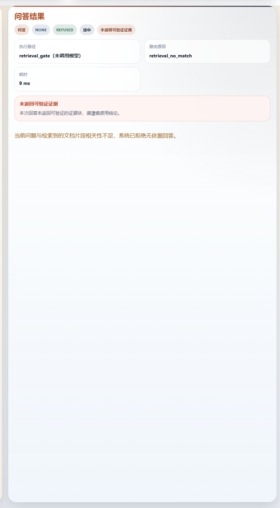

Evidence-Backed Document QA
研答通
面向论文阅读、报告复核、答辩准备的文档问答助手。核心不是泛化聊天， 而是让每条回答都能回到 PDF 原文证据。
锁定样例
中文论文 PDF
当前主链路
upload → ask → citation → PDF → refusal
为什么要做它
- 长文阅读成本高，关键信息分散，复核效率低。
- 普通聊天工具能给答案，但很难证明答案来自原文。
- 答辩和汇报场景里，真正重要的是“说得出依据”。
目标场景
论文精读 / 报告复核 / 答辩准备
核心卖点
答案、citation 与 PDF 证据同屏闭环
当前主模型
qwen3-235b-a22b-instruct-2507
回退模型
qwen3-32b
锁定样例：`chinese_llm_spatial_eval.pdf`
评审应记住：不是更会聊，而是更能回证据
Verified Path
最短可验证链路
当前真实运行环境下，已经验证通过的 judge-facing 主链路是 upload → ask → citation → PDF → refusal。
Upload
上传论文或报告，保留原始文件与解析结果。
Structure
保留页级结构、文本分块与 PDF 页面上下文。
Ask
先检索相关片段，再调用模型回答问题。
Citation
同步返回页码、citation 与证据区。
PDF
点击 citation 后，直接回到 PDF 原页查看证据。
Refusal
检索无命中时直接拒答，不编造。
评审含义
不是概念图，而是当前环境里真实跑通过的闭环。
工程含义
解析、检索、引用校验和 PDF 呈现已经接成一条链。
锁定题组
2 个 answerable + 1 个 refusal
主样例
中文空间语义评测论文
主结论
问答必须回到原文，而不是停在生成
Question 1
先给回答，再给证据
锁定问题：这篇论文主要研究了什么问题？
- 结果面板同时出现回答正文、citation 和证据区。
- 这不是脱离原文的聊天回复，而是带证据的文档问答。
- 回答的可信度来自“能回去看原文”，不是模型语气。
“评审第一眼要看到的不是模型会说话，而是它的回答和证据一起出现。”

当前锁定 Q1 截图：answerable 问题、回答结果、citation 和证据区同屏呈现。
PDF Back-Link

点击 citation 后，右侧直接打开 PDF 原页，证据片段与高亮位置同时可见。
把“能回答”变成“能验证”
- citation 不只是页码，而是一个可回跳的原文入口。
- PDF 面板同时保留原文片段和高亮位置。
- 对论文阅读和答辩场景来说，这一步才是真正的信任锚点。
区别于普通聊天工具
结果不是止于文本输出，而是能继续追到 PDF 里的证据位置。
Question 2
具体数字也能回到原文
锁定问题：作者最终的方法排名和总体准确率分别是多少？
- 当前锁定答案：第六名、56.20%。
- 两个 QA 模型都通过了当前锁定题组。
- 默认保持 `qwen3-235b-a22b-instruct-2507`，同时保留 `qwen3-32b` 作为 fallback。
默认 QA
qwen3-235b-a22b-instruct-2507
Fallback
qwen3-32b
当前判断
两者都可用，235b 继续作为主路径默认值

数值问题同样要求回答、citation 和证据区一起出现，而不是只给一个最终数字。
Refusal

锁定 refusal：`木星有几颗卫星？`，检索无命中时直接拒答。
离题不编造，边界才可靠
- 锁定题组当前结果：2 answered + 1 refused。
- 拒答的意义不是“更会聊天”，而是把无依据问题挡在链路外。
- 项目的最终差异点仍然是：答案、citation 与 PDF 证据闭环。
结论
研答通不是一个更会说话的聊天壳，而是一个更能回证据的文档问答助手。
锁定题组：Q1 / Q2 / refusal
主叙事固定为：upload → ask → citation → PDF → refusal